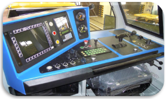
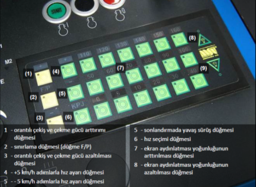

|
|
DE 13400 tipi manevra lokomotifler için bilgiye konu başlıklarına dokunarak ulaşabilirsiniz.

✦- Çekme ve tampon tertibatı, çekme kancası somunu emniyeti ve diğer önemli kısımlar,
✦- Boji, sallanan kol, tekerlek, dingil şanzımanı, yaylar, merdivenler, kulplar,
✦- Fren silindiri, cer ve manivela tutturmaları, fren pabuçları, hortum,
✦- Dingillerde algılayıcılar,
✦- Lokomotifin mekanik bağlantıları, tamponlar
✦- Kum ve yakıt seviyeleri
✦- Cer motorları tutturmalarının, hava soğutucusu girişi körükleri, enerji kabloları, rulmanların durumu,
✦- Kaporta ve makinist kabini durumu,
✦- Lokomotif kabloyla harici elektrik şebekesine bağlanmış mı?
✦- Devamla lokomotif kaportası iç alanını, genel durumu ve ünitelerin konumlarını, yanmalı motor devresini sızdırmazlığını kontrol ediniz.
Eğer bir yerlerde büyük bir miktarda kirlilik varsa onu gideriniz. Elektrik kurulumunu, topraklama bağlantılarını ve kablo izolasyonunun zarar görüp görmediğini kontrol ediniz.
✦- Kayış gerginliği,
✦- Emme ve egzoz boruları, sabitlemelerin gürültü sönümleyicileri,
✦- Yanmalı motor hava emme filtrelerinin kirlenmesi,
✦- İşletim ve yağlama maddesi miktarı ve onun söz konusu dönem için kullanılabilirliği,
✦- Yangın söndürme cihazlarının kullanılabilirliği,
✦- Elektrikli dağıtıcı teçhizatı durumu,
✦- Devre kesicilerinin tanzimi.
✦- Kabin donanımının tamlığı, eksiksizliği ve işletim yeteneği, camların bütünlüğüne, yan camların ve oturakların çalışmasına.
✦- El fren durumu,
xx
✦- R2 elektrik dolabında bıçaklı batarya ana şalter kapatılmalı,
✦- Batarya voltafı 20V'un üzerinde olduğu görülmeli,
Eğer batarya voltajı 20V'un altında ise 380V AC veya 24v DC harici besleme ile aküler şarj edilmelidir.
✦- R2 elektrik dağıtıcısındaki kumanda alanı seçimi yapılmalıdır.
[1] veya [2] pozisyonun seçiminde kumanda panosu otomatik aktive olur. Eğer kumanda alanı seçimi anahtarıyla [1+2] pozisyonları seçilmişse aktivasyonun yapılacağı seçili masada kumanda alanı aktivasyonu düğmesine basılmalıdır. Onun aktivasyonunda konusuna ait düğmenin aydınlatması ile belirtilir.
✦-TDD ekranında motor sıcaklığı 10 derece ve üzerinde olduğu görülmeli,
Motor sıcaklığı 10 derecenin altında ise R2 panelindeki "Ön ısıtma" düğmesi ile 10 dereceye kadar ön ısıtma yapılmalı,
10 derecenin altında marş gerekli ise ACİL MARŞ şartları yerine getirilmeli,
✦- Her iki masada temel "NÖTR" pozisyonda olması gereken elemanların pozisyonlarını kontrol edilmelidir.
- Loko şeçme anahtarı [P1 veya C]
- Valse -[0]
- Yön kolu - [0]
- Sürüş rejimi anahtarı - [M/M]
- Modrabl - [B2]
- Mankinist Musluğu - [J]
- Acil durum durdurma düğmesi - [Kilitsiz]
✦ Marş butonuna bir kere kısa süre basılmalı,
✦Marş yapıldıktan sonra marş sonrası sıcak kontroller yapılmalıdır.
-En fazla 3 defa en az 15-20 sn ara ile marş tekrarlanmalı, marş yapılamadı ise sebebi araştırılmalı,
-Kesicisinin açılmasından hemen sonra lokomotifin seçili teçhizatlarının (kumanda sistemi vb.) doğru çalışmalarını analiz eden teşhis testleri çalışmaya başlar. Eğer test sırasında arıza tespit edilirse TDD ekranında konusuna ait arıza bildirimi yapılır, eğer arızayı yanmalı motor elektroniği bildiriyorsa genellikle yanmalı motor start edilemez. Bu durumda daima ilk önce motoru gözden geçiriniz ve sonrada R2 elektrik dağıtıcısı içindeki reset düğmesine basarak yanmalı motor elektroniğini resetleyiniz.
-Eğer arıza hala devam ediyorsa bildirimin sebebi aranmalı ve giderilmelidir.
Acil durumlarda lokoyu hareket ettirmek için yapılan işlemdir.
✦- R2 elektrik dolabında bıçaklı batarya ana şalter kapatılmalı,
✦- Batarya voltafı 20V'un üzerinde olduğu görülmeli,
✦- Her iki masada temel "NÖTR" pozisyonda olması gereken elemanların pozisyonlarını kontrol edilmelidir.
- Loko şeçme anahtarı [P1 veya C]
- Yön kolu - [0]
- Sürüş rejimi anahtarı - [M/M]
- Modrabl - [B2]
- Mankinist Musluğu - [J]
- Acil durum durdurma düğmesi - [Kilitsiz]
✦ Marş butonu ile birlikte Valse [J+] konumuda motor devrini alana kadar basılı tutulup bırakılmalı,
✦ Valse [J] konumuna kendi gelecektir [0] konumuna alınmalı,
Bu işlem dizel motoru aşırı yıpratacağından dijital olarak kayıt edilecektir.
✦ Pnömatik sephada vanaların konumları kontrol edilmeli,
( 15) Soğuk sevk (frensiz)[AÇIK]
( 34) Modrabl iptal vanası [AÇIK]
( 35) Soğuk sevk (frenli)[KAPALI]
( 45) Konduvit iptal[AÇIK]
(100) Acil stop iptal[AÇIK]
(102) Totman iptal[AÇIK]
✦ Tren cinsine göre Triblivalf G(N)-P(O) ayarı yapılmalı,
Fren süreleri
Yük G(N) sıkma 18-30sn, gevşetme 45–60sn, Yolcu P(O) sıkma 3-6sn, gevşetme 15–20sn
✦ Hareket yönü seçilmeli,
✦ R2 dolabı içinde SA5 şalteri çevrilerek modrabl iptal edilmeli
✦ Makinist musluğu [J] konumunda olmalı,
✦El freni çözülmeli,
✦ Pnömatik sephada vanaların konumları kontrol edilmeli,
( 15) Soğuk sevk (frensiz)[AÇIK]
( 34) Modrabl iptal vanası [AÇIK]
( 35) Soğuk sevk (frenli)[KAPALI]
( 45) Konduvit iptal[AÇIK]
(100) Totman iptal[AÇIK]
(102) Acil Fren iptal[AÇIK]
✦ Tren cinsine göre Triblivalf G(N)-P(O) ayarı yapılmalı,
Fren süreleri
Yük G(N) sıkma 18-30sn, gevşetme 45–60sn, Yolcu P(O) sıkma 3-6sn, gevşetme 15–20sn
✦ R2 dolabı içinde SA5 şalteri çevrilerek modrabl iptal edilmeli
✦ Makinist musluğu [J] konumunda olmalı,
✦ Siyah NÖTR butonuna 5 sn basılılarak motor rolantiye sabitlenmeli,
Artık valse ile motor devri yükseltilemez.
NÖTR den çıkarmak için Siyah NÖTR butonuna 2sn ile 5sn arasında basılıp ardından START butonuna bir defa basılmalıdır.
✦El freni çözülmeli,
✦ Pnömatik sephada vanaların konumları kontrol edilmeli,
( 15) Soğuk sevk (frensiz)[KAPALI]
( 34) Modrabl iptal vanası [KAPALI]
( 35) Soğuk sevk (frenli)[AÇIK]
( 45) Konduvit iptal[KAPALI]
(100) Totman iptal[KAPALI]
(102) Acil Fren iptal[KAPALI]
✦ Tren cinsine göre Triblivalf G(N)-P(O) ayarı yapılmalı,
Fren süreleri
Yük G(N) sıkma 18-30sn, gevşetme 45–60sn, Yolcu P(O) sıkma 3-6sn, gevşetme 15–20sn
Bu lokomotifin trende taşınabileceği en fazla hız 100 km/s tir.
İş güvenliği tedbirlerine uyunuz.
✦ Pnömatik sephada vanaların konumları kontrol edilmeli,
Acil durumlarda lokoyu hareket ettirmek için yapılan işlemdir.
✦- R2 elektrik dolabında bıçaklı batarya ana şalter kapatılmalı,
✦1- Makinist kumanda masasındaki nötr butonuna basılması,
✦2- Valsenin ileri pozisyondan ortaya alınması,
✦3- Dizel motor soğutma sıvı sıcaklığının yüksek olması,
✦4- Makinist musluğundan kademeli veya seri fren yapılması,
✦5- Kumanda kontrol anahtarının SLAVE pozisyonuna alınması,
✦6- Pasif makinist kumanda masasındaki sürüş mod anahtarının E/A pozisyona alınması,
✦7- Hareket halinde iken el freninin sıkılması,
xxx
Acil durumlarda lokoyu hareket ettirmek için yapılan işlemdir.
✦- 1- Kabindeki acil stop mantar butonlara basılması,
✦2- Dizel motor bölmesindeki kırmızı veya siyah mantar butonlara basılması,
✦3- Dizel motorun aşırı devire kaçması (1800 d/dk ve üzeri),
✦4- Elektrik donanım bloğu R1-bölüm kaporta kapağının açılması,
✦5- Dizel motor soğutma sıvısının düşük seviyede olması (FA2 sigortası),
✦6- Dizel motor elektronik kısmında arıza olması (FA6-FA7 sigortaları),
✦7- Hidrolik sistem arızası (FA9 sigortası)-(yağ sıcaklığı, kompresör veya hidro statik pompa arızası, yağ vanasının kapalı olması, yağ seviyesinin az olması, filitrelerin tıkalı olması),
✦8- Batarya voltajının 20 voltun altına düşmesi,
✦9- Dizel motor yağ basıncının düşük olması,
xxx
R2 dolabı üzerinde "0", "1", "TEST" üç konumlu Tren kontrol (Totman) anahtarı ile iki kumanda masasında da 2 şer adet totman el butonu ile birer adet ayak pedalı bulunur.
✦ 1-R2 dolabı üzerindeki totman anahtarı "1" konumuna alınmalı
Süre:
Tekrar Kurma
✦ R2 dolabı üzerindeki totman anahtarı her zaman kapatılıp açılarak resetlenebilir.
✦CRV Lokomotif kumanda sistemi – aracın merkezi regülatörü teşhisi
✦DPV Lokomotif kumanda sistemi teşhisi – aracın bilgisayarı teşhisi
✦RTR Lokomotif kumanda sistemi – cer regülatörü teşhisi
✦OCH Lokomotif korumaları
✦CAT Yanmalı motor teşhisi
✦POR Arıza bildirimi ve onların geçmişinin listesi
✦TREN Tren hattıyla bağlanmış tren araçları hakkındaki verilerin görüntülenmesi
✦MENU İstatistik, kumanda ve deblokasyonlu (ayarların bozulması) seçili fonksiyonların bilgi ekranı
Lokomotif teşhisi – CRV, DPV, RTR, OCH, CAT ekranları
✦Servis ekranı, aracın merkezi regülatör (CRV) giriş, çıkış ve iç sinyallerinin, araç bilgisayar teşhisi (DPV) ve cer regülatörünün (RTR) ayrıntılı izlenmesine yarar. Ekranın bir parçası da lokomotif korumalarının görüntülenmesine yarayan koruma ekranıdır. Korumaların etkinliğinde lokomotif kumanda sistemine müdahale edilir, lokomotif işletimi sınırlıdır, tahriğin kesilmesi (nötr) veya yanmalı motorun stopu gerçekleşir. Korumaların müdahalesi hatırlanılır ve TDD ekranında arıza bildirimiyle sinyalize edilir. Koruma sebebinin giderilmesinden sonra nötr düğmesine ve devamla start düğmesine basarak korumayı sıfırlayınız, bu şekilde tekrar nötr seçilmiş olur. Yanmalı motorun durdurulması olduğunda daha önce R2 elektrik dağıtıcısında yerleştirili reset düğmesini kullanınız.
✦Servis ekranının diğer kısmı yanmalı motor teşhisidir, bunun üzerinden olası yanmalı motor durumu ve çalışması değerlendirilebilir ve kaydedilebilir. Tüm sistemin temel elemanı ECM elektronik modülüdür, yanmalı motorda yerleştirilmiş olan algılayıcılardan bilgi alır. Yanmalı motor hakkındaki bu bilgiyi lokomotif kumanda sistemine iletir. Aynı zamanda yanmalı motor arızasında lokomotifin diğer arızalarının arasına yazılan arıza bildirimi görüntülenir.
✦Lokomotif fonksiyonlarının kumandası ve deblokasyonu –MENU ekranı
Ekran, hem lokomotifin, gerektiğinde hem de veri toplayıcı UIC üzerinden bağlı (örneğin cer motorlarının devre dışı bırakılması, cer motorları manüel soğutmasının açılması, ölçümden dönüş algılayıcılarının kapatılması vb.) diğer lokomotiflerin fonksiyonlarının kumandasına ve deblokasyonuna yarar. Tüm bu manipülasyonlar bu fonksiyonları yöneten(debloke eden) lokomotif kumanda sistemi hafızasına kaydedilir.
✦Lokomotif işletim verileri istatikleri–MENU ekranı
Ekran yardımıyla seçili lokomotif işletim güçleri hakkındaki istatiksel veriler okunabilir (gidilen kilometre, motor saati vb.).
✦Lokomotif arızaları –POR ekranı
Ekranda aktüel (devam eden) çözülmemiş ve çözülmüş arızalar görüntülenir, ekran devamla işletim sırasında ortaya çıkan arıza geçmişini de zaman sırasına göre gösterir. Seçili arıza çeşitlerinde onların sinyalizasyonu ekranda arıza durumu sireni sesiyle görüntülenir. Onların kapatılması kullanıcının arıza bildirimi düğmesine basarak (kırmızı ünlem sembolüyle) arıza bildirimi yapmasıyla olur. Devamla, sirenle sinyalize edilen arıza sesi durur, fakat hala aktifse TDD ekranında görüntülü kalır ve kaybolduğu zaman ekrandan silinir. Lokomotif işletimim sırasında ortaya çıkan her arıza durumu arıza geçmişinde bulunabilir. Veri toplayıcı UIC aracılığıyla bağlanmış olan takımdaki bazı araçlardan bildirim yapılmışsa daha ayrıntılı araç arızası analizi mümkündür.
✦Veri toplayıcı UIC üzerinden bağlı araç verilerinin görüntülenmesi –TREN ekranı
Ekran, veri toplayıcı UIC aracılığıyla bağlanmış tren takımındaki aracın kontrolü içindir. Diğer fonksiyonlarda, örneğin tren takımı konfigürasyonu değişimi bildirimi bilgisi onayı (veri toplayıcı UIC den aracın kesilmesi veya bağlanması ) veya bağlı aracın teşhis olanağı vb. dir.
✦ZAV - Kondüvit basıncının 3.5 bar'ın altına düşüren her nedende belirir.
Makinist musluğunun (Z) pozisyona alınması, kabinden imdat çekilmesi, seri fren yapılması, diziden hortum atması, vb.nedenlerde belirir. Rolanti sebebidir.
✦BV-V - Fren silindirlerinde hava basıncı olduğunda yanar.
✦RuB - El freni sıkılı olduğunda yanar.
✦PARK - Otomatik sürüş moduna ( A/O ) alındığında yanar.
✦PARK - Park freni gerçekleştiğinde belirir.
M/M , E/A , TM/MT Sürüş rejimlerinde devre dışı olur.
✦PRU - Makinist musluğu (S) pozisyonunda iken ekranda kısa süreli görünür ve daha sonra silinir.
✦PREF - Makinist musluğu ile fren yapıldığında yanar, valse ileri alınınca silinir.
✦OK - Lokomotif hareketi onaylandığında yanar. (Yanıp-söner durumda olursa loko ikaz almaz.)

Klm/s olarak Hedef hız ve frenleme kontrolu ve enerji optimizasyon kontrolü için yüzde olarak dizel motor gücü makinist tarafından kumanda konsolundaki işıklı (ARR) Sürücü Klavyesi ile ayarlanır. Aktüel değer orantılı çekiş ve hız sınırlaması ayarlanan değeri TDD ekranında ve hız değeri klm/s üzerinde "SARI" ledler ile görüntülenir. Bu özellikler aşağıdaki işlemler ile her zaman kullanılabilir.
✦Sabit hız ayarı✦
✦ [A/O] Otomatik Sürüş rejimi seçilmelidir.
ARR klavyesinde;
✦Sarı [F/P] tuşuna basılarak üzerindeki ledin sönmesi sağlanmalıdır,
✦Hedeflenen hız yeşil hız tuşlarına basılarak seçilmelidir.
✦ KPJ tuşu Ülkemizinde geçerli olmamakla birlikte 30 km/s hızla 1000m'lik mesafe içinde ilk sinyale basmadan yaklaşmayı sağlar.
Birden yüksek hız seçilmemeli, zaman içinde ivmelenmeye göre belirli oranlarda arttırımalıdır.
✦Yeşil [+] ve [–] tuşları ile hız + – 5 km/s arttırılabilir, eksiltilebilir.
10 km/s altındaki hızlarda + – 1km/s olarak 10-3 km/s arasında seyir hızı ayarlanabilir.
✦Valse [+J] konumuna bastırılarak motor gücü ayarlanmalı hız 3km/s'in üzerine çıkınca valse bırakılmalı,
Valse kendiliğinden konumlanacaktır. Seçilen hıza ulaşınca motor gücü düşecek ve cerden çıkacaktır. Aşınca dinamik frenleme, azalınca cer yaparak otomatik hız ayarında seyir edilecektir. Gerektiğinde makinist tarafından belirli oranlarda hava freni yapılabilir.
✦Sürüş rejimi değiştirilerek, valse kapatılarak otomatik sürüşten her an çıkılabilir.
✦Sabit Güç ayarı✦
✦Bütün sürüş rejimlerinde uygulanabilir.
ARR klavyesinde;
✦Sarı [F/P] tuşuna basılarak üzerindeki ledin aydınlatılması sağlanmalı,
✦Sarı [+] ve [–] tuşları ile TDD ekranından izlenerek güç ayarı yapılmalı.
Eğer makinist musluğu fren kumandasını etkisiz kılan bir arıza oluştuysa, aşağıdaki işlemler yapılarak makinist musluğu kontaklarını modrabl fren valflerine bağlayarak Modrobl ile endirekt fren yapabilmek mümkündür.
✦ 1-R2 dolabından Makinist Musluğu [FA12] frenleme sigortasını kapatın,
✦ 2-Sürüş rejimi şalterini [E/A] endirekt frenin acil durum işletimi durumuna getirin.
✦ 3-Pnömatik sephadaki Makinist musluğu fren anahtarını kurşunu kopartarak aşağıya [N] konumuna indirin.
Bu işlem manuel sürüşlerde geçerlidir. Otomatik sürüş yapılamaz.
Eğer modrabl fren kumandasını etkisiz kılan bir arıza oluştuysa, R2 dolabı içinde SA5 şalteri çevrilip [0] modrabl iptal edilerek makinist musluğu ile endirekt fren orantısında loko freni yapılabilir.
Motor devri yükseldiği halde ikaz almıyor ise, Cer alternatörünün uyartılması için;
✦ Siyah NÖTR butonuna en az 5 sn basılı tutulmalı,
✦ Yeşil Marş butonuna birkere basılmalı,
Sürüş sırasında acil durum uyarma elektro dinamik frenle bloke edilir, yerine takviye fren gelir. Rejimin açılması TDD ekranında bildirimle sinyalize edilir.
İptali
✦ Siyah NÖTR butonu 2sn ile 5sn süre arasında basılı tutulmalı,
✦ Yeşil Marş butonuna birkere basılmalı,